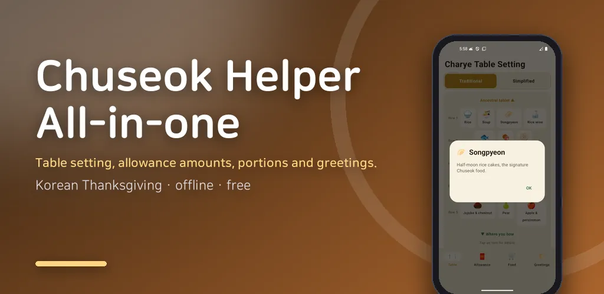
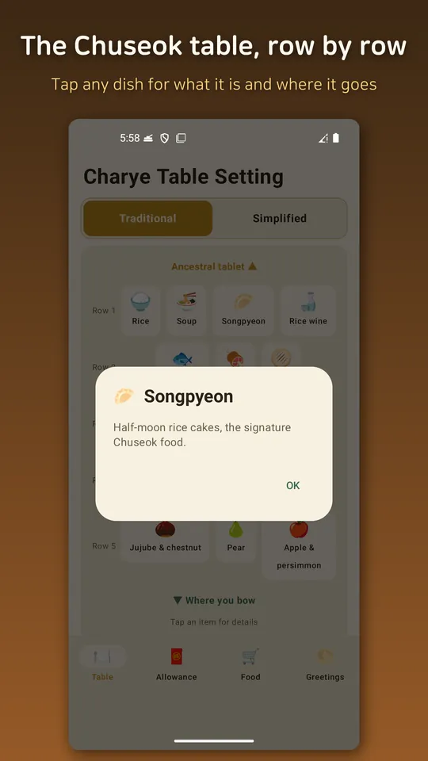
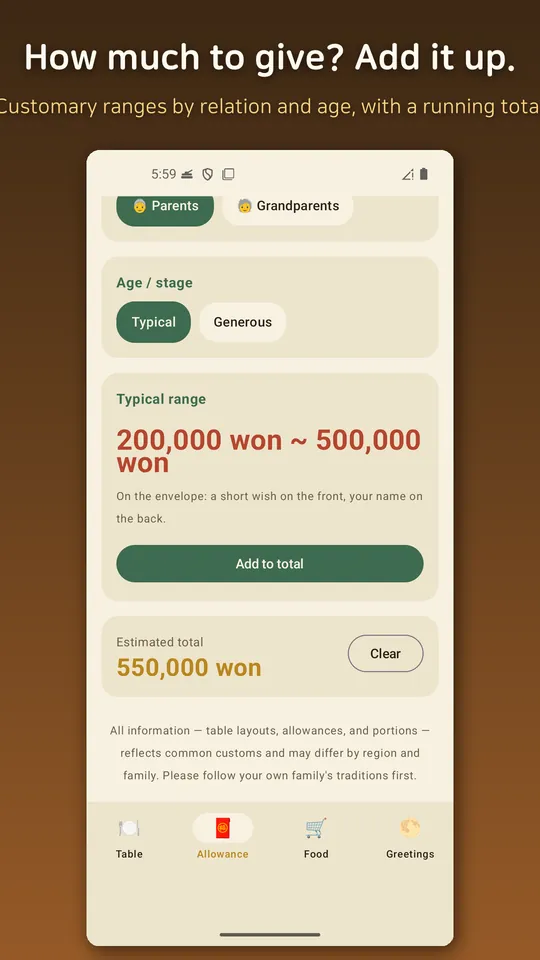
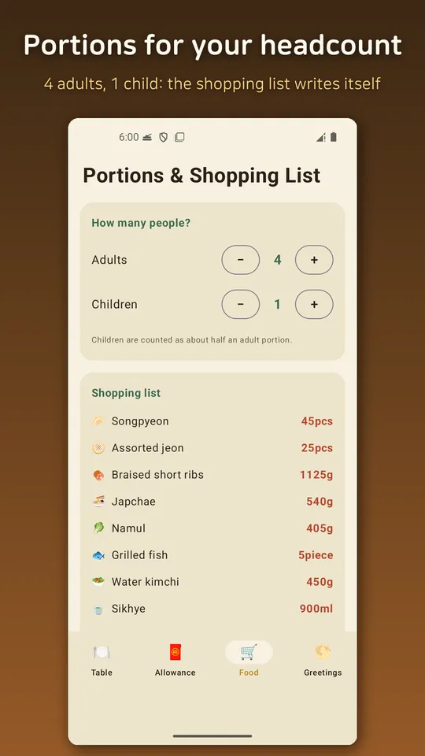
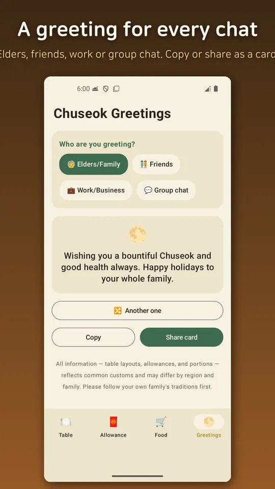

Chuseok Helper - Holiday Guide
Chuseok table setup, allowance guide, food portions & greetings. Offline.





About this app
Everything you used to search for every holiday, now in one app.
How do I set the ancestral rite table? How much allowance is right for my nephew? How many songpyeon for a family of five? And when you can't find the right words for an elder — Chuseok Helper is here. It works anywhere, even without an internet connection.
▼ Four features
- Ancestral Table Layout
See the traditional 5-row arrangement at a glance, and switch to the simplified layout announced by the Sungkyunkwan ritual committee in 2022. It organizes principles like Hongdong-baekseo and Joyul-isi, plus foods that are traditionally left off the table. Tap any dish to learn where it goes and what it means.
- Holiday Allowance Guide
Choose a relationship (nephew, child, parent, grandparent, etc.) and age to see the customary allowance range. It also covers envelope etiquette and totals for several people at once.
- Food Portions & Shopping
Enter the number of guests and the app estimates portions of holiday foods like songpyeon, jeon, and namul. Turn it into a shopping list and share it with your family.
- Chuseok Greeting Maker
Create greetings tailored to elders, friends, coworkers, or group chats. Copy and send instantly, or share a beautiful full-moon card image.
▼ Great for
- Anyone setting an ancestral table for the first time
- Anyone unsure about holiday allowance norms
- Anyone who wants to shop efficiently for the holidays
- Anyone who wants to send a heartfelt holiday greeting
▼ Use with peace of mind
- Fully offline: no server, no login, no sign-up. The internet is used only to show ads.
- No personal data is collected, stored, or transmitted.
- All features are free (with ads).
▼ Please note
Table layouts, allowance ranges, and food portions are reference information based on common customs and may differ by region and family. Please follow your own family's traditions first. This app does not provide medical, health, or legal advice.
We'll keep expanding the data so it can help with other holidays like Seollal too.
Wishing you a warm and abundant holiday.
Android · free with ads · Developer: RealTunaLove · Store listing in 17 languages
Background story: why I built it